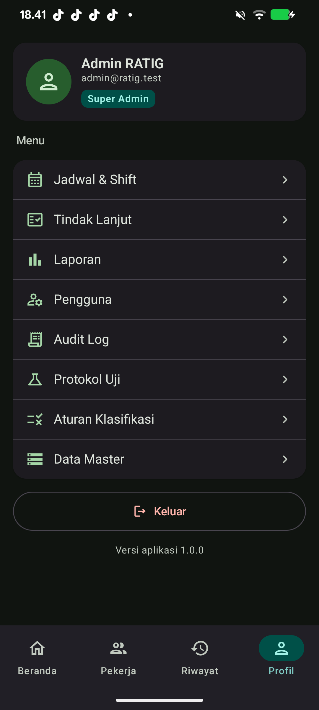
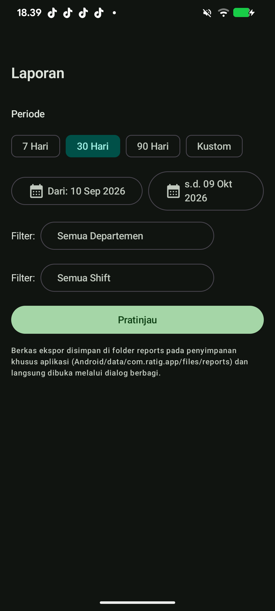
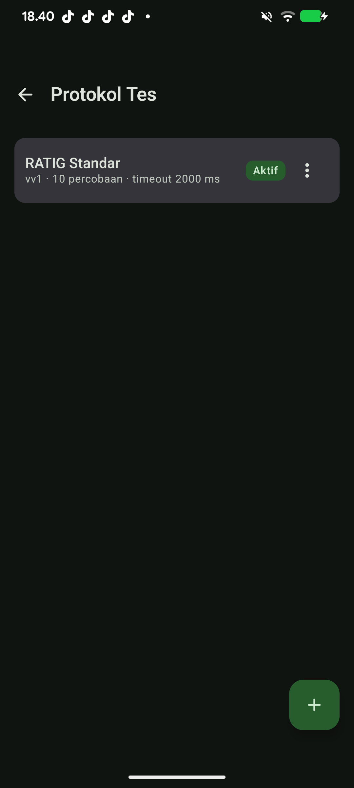
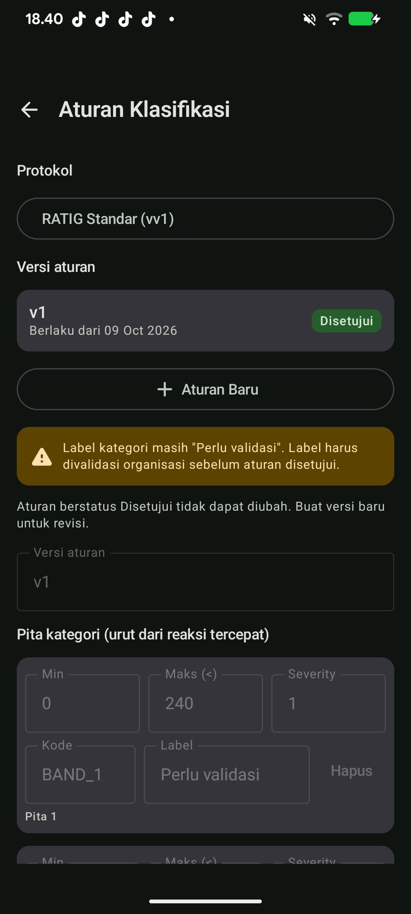
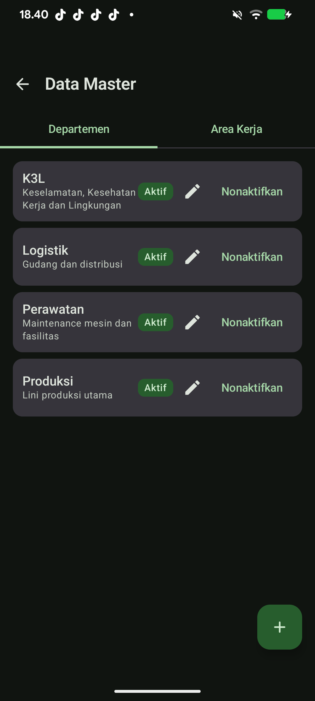
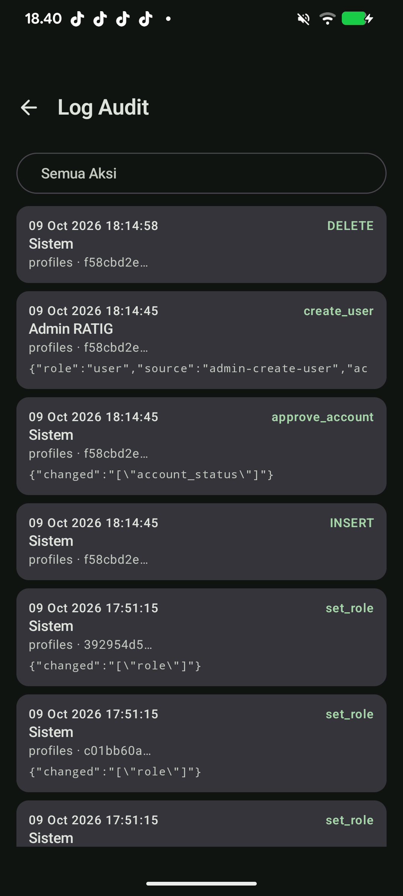

Sistem Pemeriksaan Kelelahan Pekerja Berbasis Waktu Reaksi
Versi 1.0 · Android · 2026
Program Studi Informatika · Universitas Siliwangi
RATIG adalah alat bantu keputusan. Hasil pemeriksaan bukan diagnosis medis dan bukan keputusan akhir kelayakan kerja. Keputusan tetap mengikuti SOP perusahaan dan penilaian pemeriksa yang berwenang.
Buku ini menjelaskan cara memasang, mengoperasikan, dan merawat RATIG untuk kebutuhan pemeriksaan kelelahan pekerja. Panduan disusun untuk petugas pemeriksa, administrator, dan pengelola sistem — bukan hanya untuk pengembang.
Prinsip yang dipakai sepanjang buku:
RATIG (Reaction Time Fatigue) mengukur waktu reaksi pekerja sebagai indikator kelelahan. Pemeriksaan dilakukan di perangkat Android, hasil muncul seketika, dan data dapat dipantau oleh administrator.
| Kemampuan | Penjelasan |
|---|---|
| Empat mode tes | Klasik, Warna Acak, Tombol Acak, Fokus Go/No-Go |
| Klasifikasi | Berdasarkan aturan yang disetujui organisasi |
| Identifikasi | NIK manual atau QR/barcode; NIK disamarkan |
| Offline-first | Room + WorkManager; tes tetap jalan tanpa sinyal |
| Tiga peran | Super Admin, Admin, Pengguna |
| Keamanan | RLS server-side, hasil final immutable, audit log |
| Pemantauan | Dasbor, tren, klasifikasi, per departemen/shift, ekspor CSV |
RATIG tidak menggantikan pemeriksaan medis, tidak mendiagnosis penyakit, dan tidak menetapkan kelayakan kerja secara otomatis. Aplikasi juga bukan sistem IoT dan tidak memerlukan perangkat keras khusus.
| Komponen | Kebutuhan |
|---|---|
| Sistem | Android 8.0 (API 26) atau lebih baru |
| Kamera | Untuk pemindai QR/barcode (opsional) |
| Penyimpanan | ±100 MB ruang kosong |
| Jaringan | Opsional; diperlukan untuk sinkronisasi |
| Akun | Dibuat administrator; tidak ada pendaftaran mandiri |
Jangan memasang APK dari sumber tidak dikenal. Aplikasi tidak meminta akses kamera sebelum pemindai dibuka.
Saat pertama dibuka, aplikasi menampilkan tiga pilihan dengan pratinjau langsung:
Ketuk Simpan & Lanjut. Pengaturan dapat diubah lagi dari Profil → Pengaturan Tampilan.
Email di sini adalah ID login, bukan harus mailbox aktif. Organisasi tanpa hosting email dapat memakai ID internal seperti
nama@ratig.local.
Gambar 1. Layar login email/kata sandi.
| Peran | Halaman | Wewenang |
|---|---|---|
| Super Admin | Dasbor Super Admin | konfigurasi sistem, protokol, aturan, data master, akun admin, audit |
| Admin | Dasbor Admin | pekerja, pengguna biasa, jadwal, tindak lanjut, laporan, pemantauan |
| Pengguna | Beranda Pengguna | tes, riwayat sendiri, profil |
Pembatasan ditegakkan di server dengan Row Level Security:

Gambar 2. Menu Profil Super Admin. Menu konfigurasi tidak muncul untuk Admin.
Buka Pekerja → (+) Tambah.
| Kolom | Wajib | Keterangan |
|---|---|---|
| Nomor Induk Pekerja | Ya | 4–32 digit; tidak boleh duplikat |
| Nama Lengkap | Ya | tampil di daftar |
| Email login | Tidak | boleh nama@ratig.local |
| Kata Sandi Login | Tidak | min. 8 karakter |
| Departemen / Area / Shift | Tidak | area mengikuti departemen |
| Jabatan | Tidak | contoh: Operator |
Dua kemungkinan hasil:
<nomor-induk>@ratig.local.
Gambar 3. Daftar pekerja dengan pencarian dan filter.
RATIG1:<NIK> bila kartu pekerja
tersedia.Ketuk pekerja untuk melihat:

Gambar 4. Detail pekerja dan tombol Mulai Tes.
Pilih pekerja → pilih jenis tes → baca instruksi → tes
→ tinjau hasil → finalisasi → sinkronkanJika sesi terputus, data yang sudah final tetap aman. Jangan memaksa keluar saat proses finalisasi berjalan.
| Mode | Fokus | Hasil |
|---|---|---|
| Klasik (RGB) | kecepatan reaksi | klasifikasi kelelahan |
| Warna Acak | reaksi terhadap warna acak | metrik pengamatan |
| Tombol Acak | pencarian target | akurasi/kelalaian |
| Fokus (Go/No-Go) | inhibisi respons | akurasi/kelalaian |
Hanya mode Klasik yang dipakai untuk klasifikasi; mode lain tidak digabung menjadi satu skor.
| Istilah | Arti |
|---|---|
| Mean | rata-rata waktu reaksi (ms) |
| Median | nilai tengah |
| Std. Deviasi | sebaran respons |
| Percobaan valid | trial yang dihitung |
| Respons lambat | respons melewati ambang |
| Kategori | Normal / Fatigue Ringan / Sedang / Berat |
Bila aturan belum divalidasi, kategori menampilkan “Perlu validasi”. Bila data valid tidak cukup, menampilkan “Data tidak cukup”.
Dari layar hasil, petugas dapat mencatat:
Aplikasi menampilkan temuan dan rekomendasi. Nilai kosong tidak dianggap normal. Rekomendasi tetap saran; keputusan ada pada pemeriksa.

Gambar 5. Detail hasil, metrik, dan rincian trial.
Menu Riwayat menampilkan sesi berdasarkan:
Untuk peran Pengguna, riwayat otomatis hanya berisi sesi sendiri; filter departemen diganti informasi Departemen Anda.
Ketuk sesi untuk melihat:
Admin dapat membuat catatan tindak lanjut, menetapkan status, dan menutup temuan. Gunakan menu Tindak Lanjut atau bagian bawah detail sesi.
Menampilkan:

Gambar 6. Grafik klasifikasi, departemen/shift, dan tren.

Gambar 7. Halaman laporan dan ekspor.

Gambar 8. Daftar protokol.
Atur ambang kategori, severity, dan validasi aturan. Label dan ambang harus sesuai SOP organisasi.

Gambar 9. Aturan klasifikasi.
Kelola departemen, area kerja, dan shift. Data ini dipakai untuk mengelompokkan pekerja dan laporan.

Gambar 10. Data master.
Audit log mencatat tindakan penting: pembuatan akun, perubahan peran, persetujuan, dan perubahan konfigurasi.

Gambar 11. Audit log.
| Status | Arti |
|---|---|
| Menunggu koneksi | tersimpan lokal |
| Sedang disinkronkan | sedang dikirim |
| Tersinkronisasi | diterima server |
| Gagal, akan dicoba | gangguan sementara |
| Perlu pemeriksaan | perlu tindakan admin |
Server tetap sumber kebenaran. Hasil final tidak dapat diubah dari perangkat.
Tidak perlu mail server atau undangan email.
<NIP>@ratig.local.nama@ratig.local), dan sandi sementara.Email hanyalah pengenal unik. Tidak ada email yang dikirim, sehingga mailbox/hosting email tidak diperlukan.
| Gejala | Solusi |
|---|---|
| Tidak bisa login | cek ID/sandi, status akun, dan jaringan |
| Tambah pekerja ditolak | NIP/email duplikat atau sandi < 8 karakter |
| Tambah pengguna ditolak | ID login sudah dipakai atau sandi < 8 karakter |
| QR tidak dikenali | gunakan format RATIG1:<NIK> atau input
manual |
| Kamera tidak muncul | izinkan kamera di Pengaturan Android → RATIG → Izin |
| Data belum terkirim | buka Status Sinkronisasi; cek jaringan; sinkronkan |
| Grafik kosong | belum ada sesi final/klasifikasi/departemen |
| “Perlu validasi” | aturan klasifikasi belum divalidasi; hubungi Super Admin |
| “Koneksi jaringan bermasalah” | periksa DNS/jaringan perangkat |
| Hasil terputus | lanjutkan sesi atau ulangi; jangan paksa keluar saat finalisasi |
| Istilah | Arti |
|---|---|
| PVT | Psychomotor Vigilance Task; tes waktu reaksi |
| Monotonic clock | jam yang tidak terpengaruh perubahan waktu sistem |
| RLS | Row Level Security; pembatasan baris data di PostgreSQL |
| Edge Function | fungsi server untuk operasi sensitif (pembuatan akun, ekspor) |
| Room | database lokal Android |
| WorkManager | penjadwal sinkronisasi latar belakang |
| Immutable | tidak dapat diubah setelah final |
| Audit log | catatan tindakan penting |
Kata sandi: Ratig-T3st-2026! (hanya
lingkungan uji).
| Peran | |
|---|---|
admin@ratig.test |
Super Admin |
examiner@ratig.test |
Admin |
mgmt@ratig.test |
Admin |
worker@ratig.test |
Pengguna |
docs/guidebook/RATIG-Guidebook.pdf — ringkasan
operasional.docs/poster/RATIG-Poster.pdf — poster ilmiah A2.docs/demo/RATIG-Demo-Penggunaan.mp4 — demo
penggunaan.USER-MANUAL.md — manual pengguna versi ringkas.Hubungi administrator teknis atau pengelola sistem RATIG di organisasi Anda. Sertakan versi aplikasi, model perangkat, dan tangkapan layar bila melaporkan masalah.
RATIG — sederhana bagi pengguna, kuat di belakang layar.